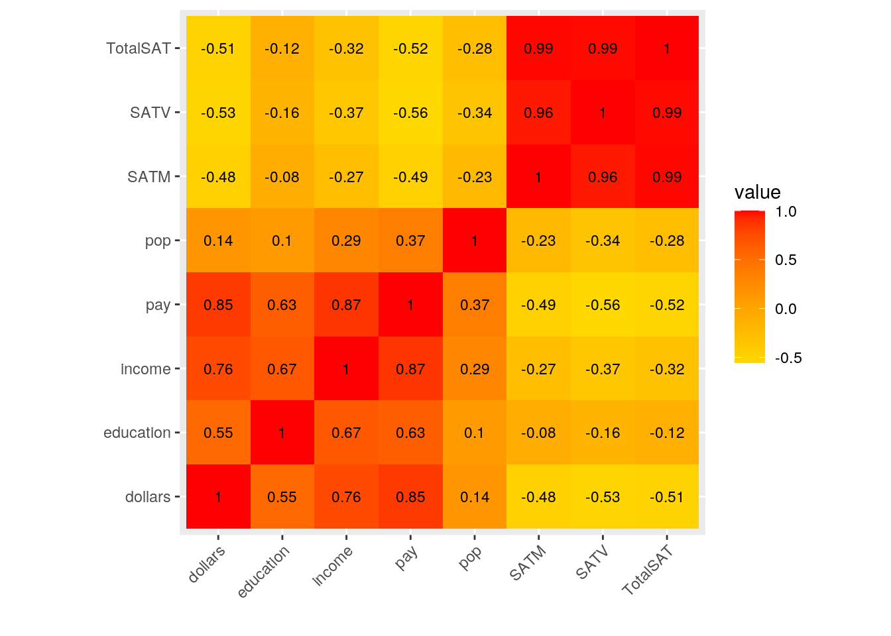
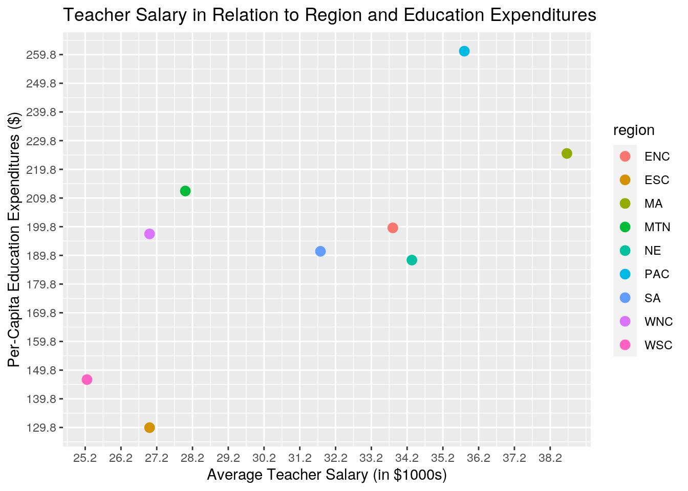
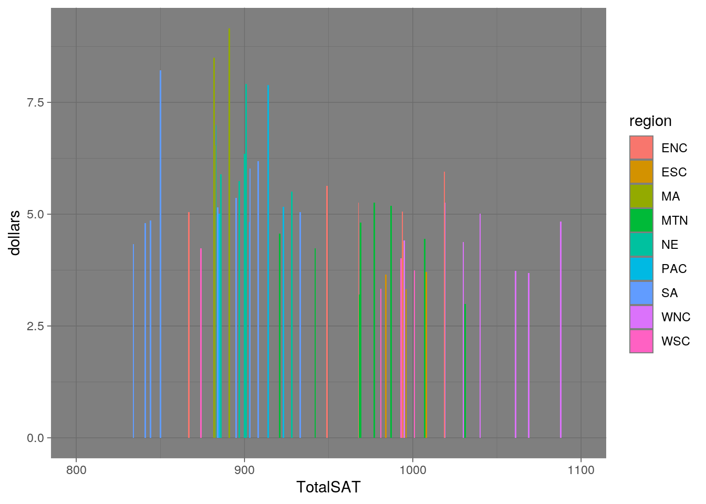
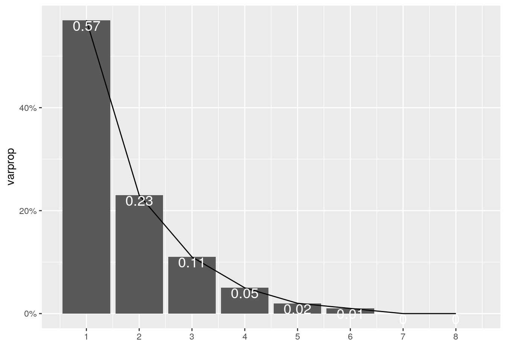
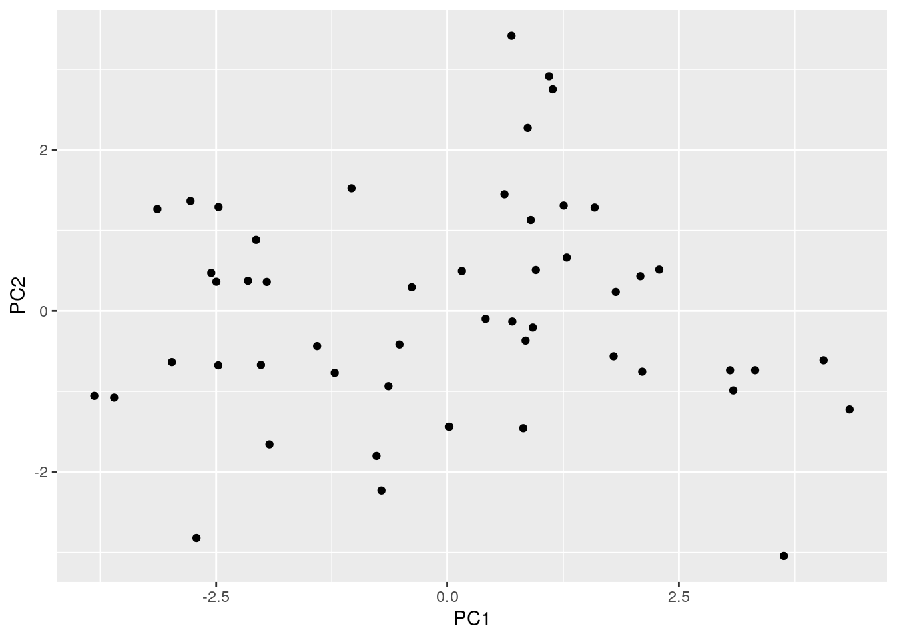
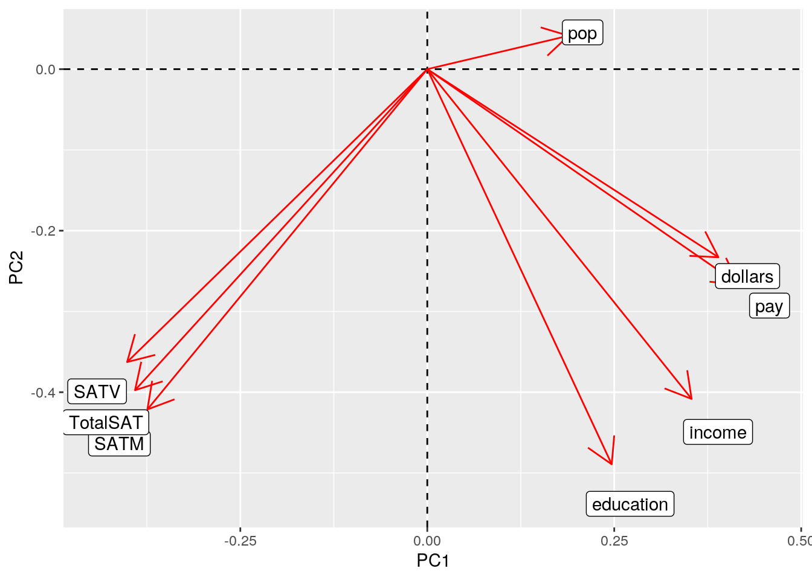

Educational equity remains a broad concern worldwide and in the United States. In order to undertsand what variables affect educational outcomes in high school students in the United States, the State Education and U.S. State Public-School Expenditures datasets were selected. Specifically, I am looking to interpret the relationship between the amount of money spent towards education and performance on standarized test amongst test takers. I am assuming that more money invested into the state's education system (i.e, school funding, teacher salary, etc.) will result in better test scores due to the resources made available via funding allocations.
The variables that will be inspected are region (grouped by states in the United States), SATV and SATM (average verbal and math components of the Scholastic Aptitude Test- SAT- by state), dollars (state spending on public education in thousands/student), pay (average teacher's salary in thousands), education (per-capita education expenditures), income (per-capita income), and state (all U.S. states including Washinton D.C.).
library(readr)
library(tidyverse)
# Datasets utilized Education and Related Statistics for the
# U.S. States
edustate <- read_csv("State Education .csv")
edustate <- select(edustate, -c(percent))
# U.S. State Public-School Expenditures
publicschool <- read_csv("Public School Expenditures.csv")
publicschool <- select(publicschool, -c(young, urban))
# Data is already tidy, utlizing pivot_wider() function to
# 'untidy' then tidy again
fulldata <- full_join(edustate, publicschool, by = c(state = "state"))
# Making combined data untidy using 'pivot_wider()'
untidy <- fulldata %>% pivot_wider(names_from = "region", values_from = "pop")
# Making combined data tidy again using 'pivot_longer()'
untidy %>% pivot_longer(cols = c("ESC", "PAC", "MTN", "WSC",
"NE", "SA", "ENC", "WNC", "MA"), names_to = "region", values_to = "pop") %>%
na.omit()## # A tibble: 51 x 9
## state SATV SATM dollars pay education income region pop
## <chr> <dbl> <dbl> <dbl> <dbl> <dbl> <dbl> <chr> <dbl>
## 1 AL 470 514 3.65 27 112 2337 ESC 4041
## 2 AK 438 476 7.89 43 372 4146 PAC 550
## 3 AZ 445 497 4.23 30 207 3027 MTN 3665
## 4 AR 470 511 3.33 23 134 2322 WSC 2351
## 5 CA 419 484 4.83 39 273 3968 PAC 29760
## 6 CO 456 513 4.81 31 192 3340 MTN 3294
## 7 CT 430 471 7.91 43 193 4256 NE 3287
## 8 DE 433 470 6.02 35 248 3795 SA 666
## 9 DC 409 441 8.21 39 246 4425 SA 607
## 10 FL 418 466 5.15 30 191 3191 SA 12938
## # … with 41 more rowslibrary(dplyr)
fulldata <- full_join(edustate, publicschool, by = c(state = "state"))
glimpse(fulldata)## Rows: 51
## Columns: 9
## $ state <chr> "AL", "AK", "AZ", "AR", "CA", "CO", "CT", "DE", "DC", "FL",…
## $ region <chr> "ESC", "PAC", "MTN", "WSC", "PAC", "MTN", "NE", "SA", "SA",…
## $ pop <dbl> 4041, 550, 3665, 2351, 29760, 3294, 3287, 666, 607, 12938, …
## $ SATV <dbl> 470, 438, 445, 470, 419, 456, 430, 433, 409, 418, 401, 404,…
## $ SATM <dbl> 514, 476, 497, 511, 484, 513, 471, 470, 441, 466, 443, 481,…
## $ dollars <dbl> 3.648, 7.887, 4.231, 3.334, 4.826, 4.809, 7.914, 6.016, 8.2…
## $ pay <dbl> 27, 43, 30, 23, 39, 31, 43, 35, 39, 30, 29, 32, 25, 34, 32,…
## $ education <dbl> 112, 372, 207, 134, 273, 192, 193, 248, 246, 191, 156, 212,…
## $ income <dbl> 2337, 4146, 3027, 2322, 3968, 3340, 4256, 3795, 4425, 3191,…The "full_join()" join function was utilized to preserve all variables and observations. Additionally, given that the datasets were joined using the common variable "state" (U.S. States and Washington D.C) there were no N.A.s in the final data set (full data) because all observations had an entry for each variable.
# Mutate function adds the variable 'TotalSAT' to 'fulldata'
# set by combining the SAT verbal and mathematics sections
fulldata <- fulldata %>% mutate(TotalSAT = SATV + SATM)The "fulldata" dataset was mutated to create the variable "TotalSAT" which is the addition of the math and verbal SAT portions to yield the total SAT score.
# 1: Looking at relationship between amount spent on public
# education (in $1000s/student) and overall SAT score by
# state (arranged greatest to lowest average SAT score)
fulldata %>% select(state, dollars, TotalSAT) %>% arrange(desc(dollars),
desc(TotalSAT))## # A tibble: 51 x 3
## state dollars TotalSAT
## <chr> <dbl> <dbl>
## 1 NJ 9.16 891
## 2 NY 8.5 882
## 3 DC 8.21 850
## 4 CT 7.91 901
## 5 AK 7.89 914
## 6 RI 6.99 883
## 7 PA 6.53 883
## 8 MA 6.35 900
## 9 MD 6.18 908
## 10 DE 6.02 903
## # … with 41 more rows# 2: Determing the minimum, maximum, mean, and median of
# amount spent on public education (in $1000s/student)
fulldata %>% summarize(sd(dollars), min(dollars), max(dollars),
mean(dollars), median(dollars))## # A tibble: 1 x 5
## `sd(dollars)` `min(dollars)` `max(dollars)` `mean(dollars)` `median(dollars)`
## <dbl> <dbl> <dbl> <dbl> <dbl>
## 1 1.38 2.99 9.16 5.18 5.04Though it was expected that increased state spending on public education was yield better SAT scores, there is no clear/distinct relationship between these two variables. The second code shows the range of money spent on public education by observing standard deviation, minimum, maxium, mean, and median. Based on the result, the mean fall close to the median of dollars (in $1000s/student) spent on public education.
# 3: Grouping states by region and summarizing by mean
# dollars spent, mean income, and mean SAT score
fulldata %>% group_by(region) %>% summarize(mean_fund = mean(dollars),
mean_income = mean(income), mean_SAT = mean(TotalSAT))## # A tibble: 9 x 4
## region mean_fund mean_income mean_SAT
## <chr> <dbl> <dbl> <dbl>
## 1 ENC 5.39 3588 959.
## 2 ESC 3.77 2410. 996.
## 3 MA 8.06 3841. 885.
## 4 MTN 4.34 3071. 975.
## 5 NE 6.40 3466. 899.
## 6 PAC 5.61 3726. 910.
## 7 SA 5.55 3168. 877.
## 8 WNC 4.47 3144. 1043.
## 9 WSC 3.83 2716. 962.# 4: Filtering states by region 'WNC' (West North Central),
# given that this region had the greatest mean SAT score.
fulldata %>% group_by(state) %>% filter(region == "WNC") %>%
summarize(mean_fund = mean(dollars), mean_income = mean(income),
mean_SAT = mean(TotalSAT))## # A tibble: 7 x 4
## state mean_fund mean_income mean_SAT
## <chr> <dbl> <dbl> <dbl>
## 1 IA 4.84 3265 1088
## 2 KS 5.01 3303 1040
## 3 MN 5.26 3341 1019
## 4 MO 4.42 3257 995
## 5 ND 3.68 2730 1069
## 6 NE 4.38 3239 1030
## 7 SD 3.73 2876 1061The states were grouped by region in order to see the difference in mean overall SAT scores across the United States. The WNC region (West North Central) had the highest mean overall SAT score and the MA region (Midatlantic) had the lowest mean overall SAT score. All but one state in the WNC region scored above a 1000 on the SAT examination.
# 5: Grouping observation by state and summarizing by mean
# income, teacher salary, and mean SAT score
fulldata %>% group_by(state) %>% summarize(mean_income = income,
teacher_salary = pay, mean_SAT = mean(TotalSAT)) %>% arrange(desc(mean_income),
desc(teacher_salary), desc(mean_SAT))## # A tibble: 51 x 4
## state mean_income teacher_salary mean_SAT
## <chr> <dbl> <dbl> <dbl>
## 1 DC 4425 39 850
## 2 CT 4256 43 901
## 3 NY 4151 42 882
## 4 AK 4146 43 914
## 5 IL 3981 34 994
## 6 CA 3968 39 903
## 7 NV 3957 32 921
## 8 NJ 3954 38 891
## 9 MA 3835 36 900
## 10 DE 3795 35 903
## # … with 41 more rows# 6: Grouping observations by pay and summarizing by
# education, teacher salary, and mean SAT score, with teacher
# salary and SAT score arranged from greatest to lowest to
# see if teacher salary and pre-capita expenditures affect
# SAT score
fulldata %>% group_by(pay) %>% summarize(teacher_salary = mean(pay),
education_per_capita = mean(education), mean_SAT = mean(TotalSAT)) %>%
arrange(desc(teacher_salary), desc(mean_SAT))## # A tibble: 20 x 4
## pay teacher_salary education_per_capita mean_SAT
## <dbl> <dbl> <dbl> <dbl>
## 1 43 43 282. 908.
## 2 42 42 261 882
## 3 39 39 260. 876.
## 4 38 38 231. 922.
## 5 37 37 180 883
## 6 36 36 184. 892.
## 7 35 35 248 903
## 8 34 34 189 994
## 9 33 33 229. 987
## 10 32 32 203. 907.
## 11 31 31 197 931.
## 12 30 30 199 913
## 13 29 29 177 939.
## 14 28 28 174. 948.
## 15 27 27 112 984
## 16 26 26 185. 990
## 17 25 25 186. 999.
## 18 24 24 132. 998.
## 19 23 23 156. 1025
## 20 22 22 187 1061# 7: Grouping observations by region and summarizing by
# teacher salary and education funding to understand if
# teachers get paid more by education funding. (utlized for
# GGPlot #1)
avgsalary <- fulldata %>% group_by(region) %>% summarize(teacher_salary = mean(pay),
education_funds = mean(education))
# 8: Grouping observations by region and summarizing by
# dollars ($1000s/student) invested per student and SAT score
# (utlized for GGPlot #2)
ggplot2values <- fulldata %>% group_by(region) %>% summarize(dollars = mean(dollars),
TotalSAT = mean(TotalSAT))Generally, teachers were better compensated (higher salary) if the state's mean income was greater (though there are a handfull of outliers). Additionally, teachers tended to be better compensated if there was more per-capita education expenditures, though there are a few outliers in this trend.
# 9: Determing the sd, minimum, maximum, mean, and median of
# SAT scores grouped by region to understand the range of
# test scores in each region
fulldata %>% group_by(region) %>% summarize(sd(TotalSAT), min(TotalSAT),
max(TotalSAT), mean(TotalSAT), median(TotalSAT), sd(dollars))## # A tibble: 9 x 7
## region `sd(TotalSAT)` `min(TotalSAT)` `max(TotalSAT)` `mean(TotalSAT)`
## <chr> <dbl> <dbl> <dbl> <dbl>
## 1 ENC 58.0 867 1019 959.
## 2 ESC 9.85 984 1008 996.
## 3 MA 4.93 882 891 885.
## 4 MTN 34.6 921 1031 975.
## 5 NE 16.0 883 928 899.
## 6 PAC 16.0 885 923 910.
## 7 SA 35.5 834 933 877.
## 8 WNC 31.8 995 1088 1043.
## 9 WSC 59.4 874 1001 962.
## # … with 2 more variables: `median(TotalSAT)` <dbl>, `sd(dollars)` <dbl># 10:
fulldata %>% summarize(n_distinct(TotalSAT))## # A tibble: 1 x 1
## `n_distinct(TotalSAT)`
## <int>
## 1 45Most regions in the United States, have high values of standard deviaition for test scores (base on states in each respective region), with the exception of two region (ESC and MA, relative to other regions). This could indicate that region may not be an indicator in state's similarity of educational resources available, though state spending on public education yielded much lower and closer standard deviations.
# Correlation heatmap of numeric variables
library(tidyverse)
library(ggplot2)
fulldata %>% select_if(is.numeric) %>% cor %>% as.data.frame %>%
rownames_to_column %>% pivot_longer(-1) %>% ggplot(aes(rowname,
name, fill = value)) + geom_tile() + geom_text(aes(label = round(value,
2)), size = 3) + xlab("") + ylab("") + theme(axis.text.x = element_text(angle = 45,
hjust = 1)) + coord_fixed() + scale_fill_gradient2(low = "yellow",
mid = "orange", high = "red") The strongest correlation is held by the variables TotalSAT and SATM (0.99) as well as TotalSAT and SATV (0.99. Given that TotalSAT is a result of the addition between SATV and SATM this correlation is understandable. Excluding these relationships, the variables Income (per-capita income) Pay (teacher's salary) have the second strongest correlation (0.87). This can be attributed to the idea, that state's with a greater overall income, would naturally have higher compensated individuals. The variables Income and Dollars (state spending on public education per student) have the largest negative correlation (-0.51), indicating that as the amount of money spent on public education increases,the TotalSAT score decreases.
# GGPlot #1: 'Teacher Salary in Relation to Region and
# Education Expenditures'
avgsalary %>% ggplot() + geom_point(aes(x = teacher_salary, y = education_funds,
color = region), size = 3) + scale_x_continuous(breaks = round(seq(min(avgsalary$teacher_salary),
max(avgsalary$teacher_salary), by = 1), 1)) + scale_y_continuous(breaks = round(seq(min(avgsalary$education_funds),
max(avgsalary$education_funds), by = 10), 1)) + xlab("Average Teacher Salary (in $1000s)") +
ylab("Per-Capita Education Expenditures ($)") + ggtitle("Teacher Salary in Relation to Region and Education Expenditures") +
theme_grey() The scatterplot above shows the relationship between the average teacher salary and per-capita education expenditures, plotted by region. Generally, as the per-capita education expenditures, the average teacher salary increases. So, as education funding increases, teachers are more likley to be better compensated (though there are outliers based on region, and even state).
# GGPlot #2: 'SAT Score in Relation to Money Invested (by
# thousands/student) in State Public School Education by and
# Region'
fulldata %>% ggplot(aes(x = TotalSAT, y = dollars, fill = region)) +
geom_bar(stat = "summary", position = "dodge") + scale_x_continuous(lim = c(800,
1100, 1000)) + theme_dark() The barplot above shows the relationship between TotalSAT (overall SAT score) and dollars (state spending on public education, in $1000s per student) by region. It was expected that as state spending on public education increased, so would student performance on the SAT standardized test. However, there is not clear relationship between these two variables, however it can be seen that the states in the WNC region performed higher overall compared to states in other regions.
new_fulldata <- fulldata %>% select_if(is.numeric) %>% scale
# not more observations than variables
new_fulldata_pca <- princomp(new_fulldata)
# Summarized Results
summary(new_fulldata_pca, loadings = T)## Importance of components:
## Comp.1 Comp.2 Comp.3 Comp.4 Comp.5
## Standard deviation 2.107985 1.3495610 0.9462134 0.6275305 0.4206820
## Proportion of Variance 0.566559 0.2322177 0.1141533 0.0502088 0.0225641
## Cumulative Proportion 0.566559 0.7987766 0.9129299 0.9631387 0.9857028
## Comp.6 Comp.7 Comp.8
## Standard deviation 0.29454551 0.159303946 1.288271e-08
## Proportion of Variance 0.01106152 0.003235663 2.116044e-17
## Cumulative Proportion 0.99676434 1.000000000 1.000000e+00
##
## Loadings:
## Comp.1 Comp.2 Comp.3 Comp.4 Comp.5 Comp.6 Comp.7 Comp.8
## pop 0.189 0.951 0.194 0.107
## SATV -0.401 -0.363 -0.136 -0.148 0.711 0.387
## SATM -0.374 -0.421 0.143 -0.100 -0.676 0.434
## dollars 0.389 -0.233 -0.219 -0.446 0.661 0.333
## pay 0.416 -0.266 -0.220 -0.831 -0.112
## education 0.247 -0.489 -0.108 0.810 0.171
## income 0.353 -0.408 -0.230 -0.693 0.397 0.125
## TotalSAT -0.391 -0.397 -0.118 -0.813# Square to convert SDs to eigenvalues
eigval <- new_fulldata_pca$sdev^2
# Proportion of var explained by each PC
varprop = round(eigval/sum(eigval), 2)
# Number of PCs to keep
ggplot() + geom_bar(aes(y = varprop, x = 1:8), stat = "identity") +
xlab("") + geom_path(aes(y = varprop, x = 1:8)) + geom_text(aes(x = 1:8,
y = varprop, label = round(varprop, 2)), vjust = 1, col = "white",
size = 5) + scale_y_continuous(breaks = seq(0, 0.6, 0.2),
labels = scales::percent) + scale_x_continuous(breaks = 1:10)
# Cumulative Proportion of Variance
round(cumsum(eigval)/sum(eigval), 2)## Comp.1 Comp.2 Comp.3 Comp.4 Comp.5 Comp.6 Comp.7 Comp.8
## 0.57 0.80 0.91 0.96 0.99 1.00 1.00 1.00eigval[1:8]## Comp.1 Comp.2 Comp.3 Comp.4 Comp.5 Comp.6
## 4.443600e+00 1.821315e+00 8.953197e-01 3.937945e-01 1.769733e-01 8.675706e-02
## Comp.7 Comp.8
## 2.537775e-02 1.659642e-16# Data with respect to the first 2 PCs
edu_df <- data.frame(PC1 = new_fulldata_pca$scores[, 1], PC2 = new_fulldata_pca$scores[,
2])
ggplot(edu_df, aes(PC1, PC2)) + geom_point()
# Plot of Loadings
new_fulldata_pca$loadings[1:8, 1:2] %>% as.data.frame %>% rownames_to_column %>%
ggplot() + geom_hline(aes(yintercept = 0), lty = 2) + geom_vline(aes(xintercept = 0),
lty = 2) + ylab("PC2") + xlab("PC1") + geom_segment(aes(x = 0,
y = 0, xend = Comp.1, yend = Comp.2), arrow = arrow(), col = "red") +
geom_label(aes(x = Comp.1 * 1.1, y = Comp.2 * 1.1, label = rowname)) Based on the plot, it appears that the variables dollars and pay are strongly correlted with each other. This indicates that as state spending on public education increases, so does teacher annual salary.